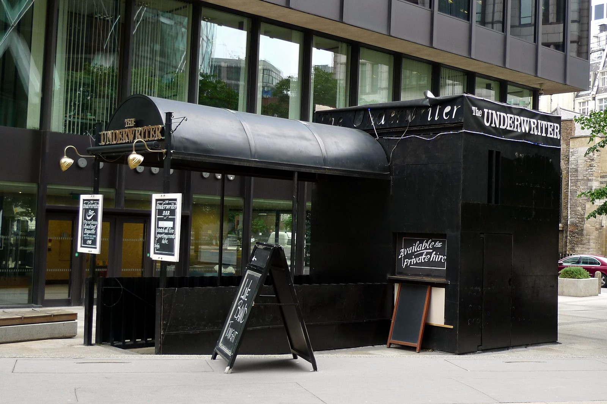
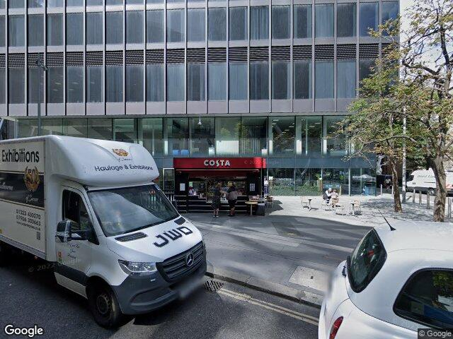
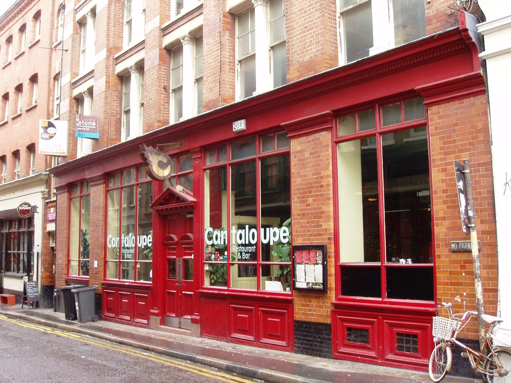
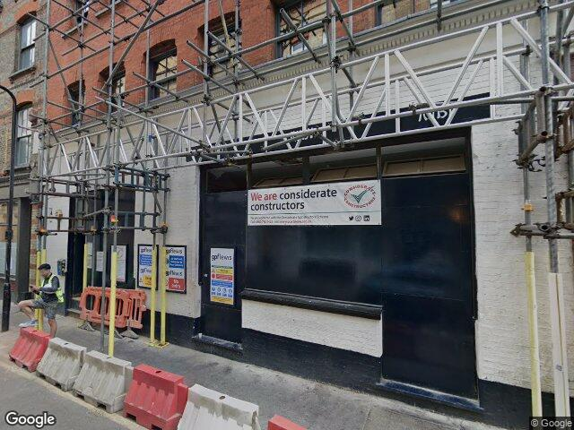
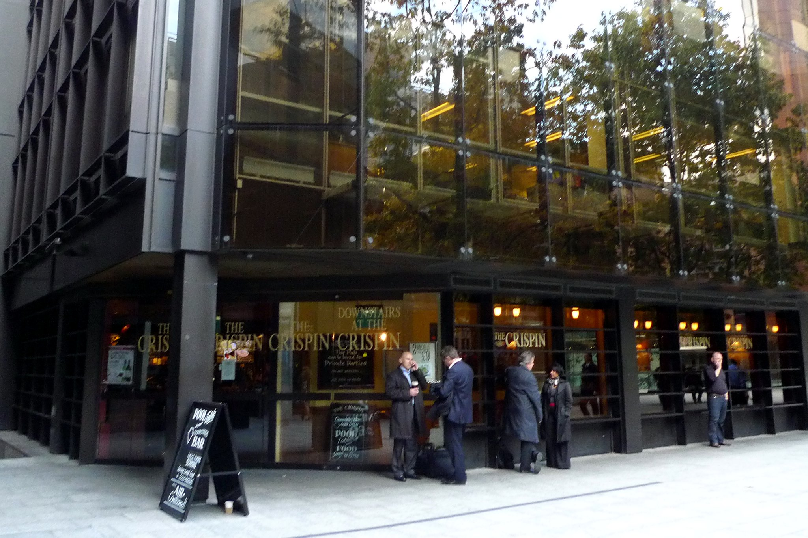
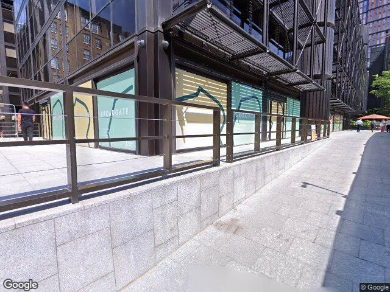

Ghost Hunter
PINtPOINT doesn't just show what's still open. It also reveals the pubs that vanished, were demolished, or quietly slipped away. Turn on Ghost Hunter and London fills with purple blips from another era.
Lost pubs of London

City of London — a proper City boozer

Now a Costa. Of course it is.

Shoreditch — that red facade was unmistakable

Under scaffolding. The red facade is being erased.

City of London — suits, pints, and a pool bar downstairs

Also a Costa. The pool table didn't survive.
Photos: Ewan Munro · Street View: Google
↑ Click a photo to flip between then and now
How it works
Ghost pubs appear as solid purple blips on the radar. 363 with historical photos. 71 demolished entirely. Toggle in Refine Results.
Historical photos alongside current Street View. Tap the venue image to flip between past and present — the same corner, decades apart.
Filter to show only the pubs that no longer exist at all — not converted, not closed, just gone. A map of what London lost.
Ghost Hunter is included in PINtPOINT. 7-day free trial, then £3.99/year.
Download PINtPOINT